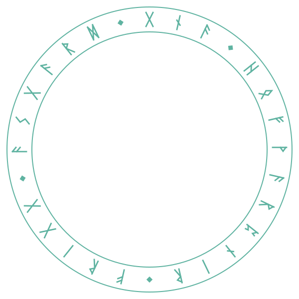
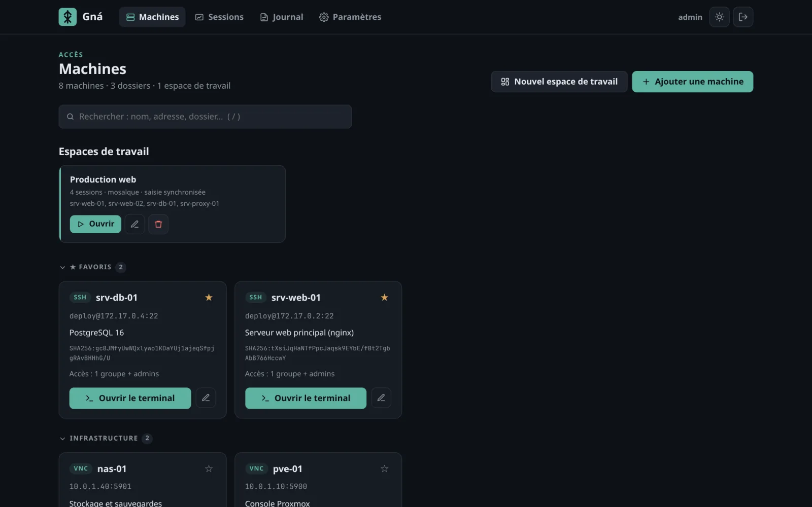
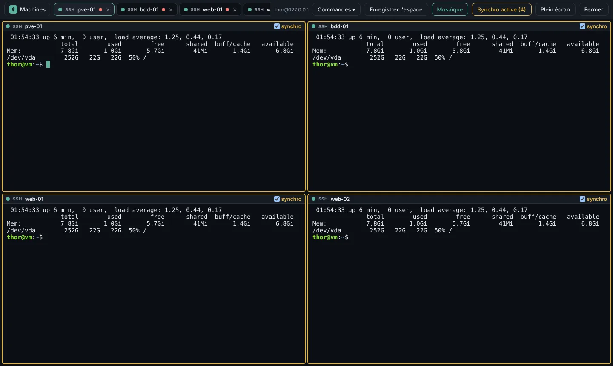
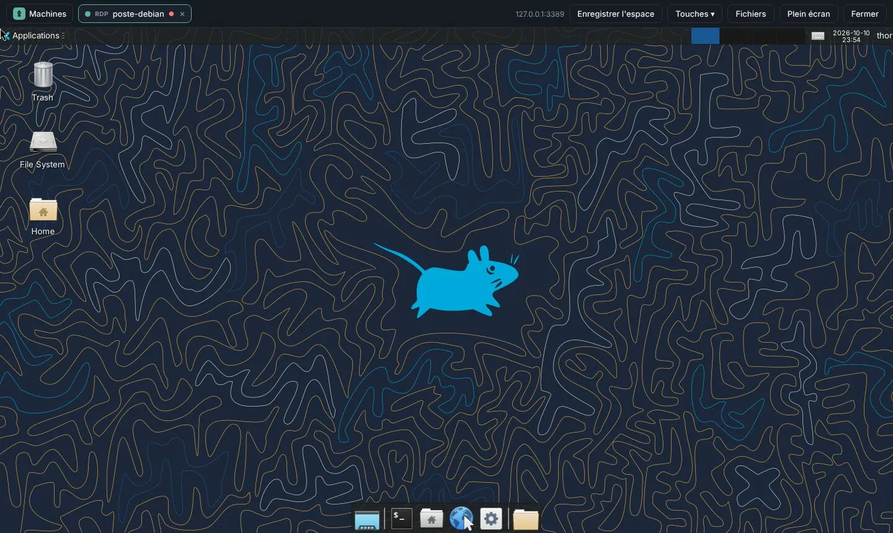

Terminal SSH
Terminal complet (xterm.js) : couleurs, redimensionnement, copier-coller. Mot de passe ou clé privée chiffrés en base, jamais renvoyés au navigateur.

Gná ouvre vos terminaux SSH et vos bureaux RDP et VNC directement dans le navigateur. Chaque accès est authentifié, autorisé, enregistré et chiffré. Les identifiants des cibles ne quittent jamais le serveur.
Le principe
Gná se place entre vos utilisateurs et vos machines. Il ouvre lui-même les connexions SSH, RDP et VNC, puis relaie le flux par WebSocket. Il garde les secrets chiffrés et trace tout ce qui passe.
Aperçu
Espaces de travail, machines rangées par dossier, sessions en mosaïque et bureaux à distance, dans le navigateur.



Fonctionnalités
Tout se passe dans un onglet de navigateur, ou dans l'application.
Terminal complet (xterm.js) : couleurs, redimensionnement, copier-coller. Mot de passe ou clé privée chiffrés en base, jamais renvoyés au navigateur.
Windows et xrdp en RDP, tout serveur VNC. Copier-coller UTF-8 dans les deux sens, bureau à la taille de la fenêtre, Ctrl+Alt+Suppr et autres raccourcis à un clic.
Plusieurs sessions ouvertes en même temps, chacune dans son onglet, qui reste connecté en arrière-plan. La mosaïque les affiche toutes en grille.
Tapez une commande une fois, elle part dans tous les terminaux SSH cochés « synchro ». Chaque session reste enregistrée et journalisée séparément.
Les machines sont rangées par dossier, en groupes repliables, avec une recherche par nom, adresse ou description. L'étoile place une machine dans « ★ Favoris ».
Enregistrez vos commandes courantes et lancez-les d'un clic dans le terminal actif, ou dans tous les terminaux synchronisés.
Un ensemble de machines rouvert d'un clic, avec sa disposition (onglets ou mosaïque) et sa saisie synchronisée.
SFTP dans le terminal SSH, lecteur partagé « Gna » en RDP. Envoi par bouton ou par glisser-déposer. Chaque transfert est journalisé.
Mot de passe (Argon2id) puis code TOTP, enrôlé par QR code à la première connexion. Compatible Aegis, 2FAS, Bitwarden, Google Authenticator…
Chacun ne voit que ses cibles. Si un accès est retiré ou un compte désactivé, la session ouverte se ferme dans les 30 secondes.
SSH, VNC et RDP sont enregistrés et chiffrés. Les admins peuvent les relire avec pause, vitesse et déplacement dans le temps, et chercher du texte dans les sessions SSH.
Les thèmes communs à la famille : Gná (sombre), Écume (clair), Fjord, Saga, Vélin, Nuit, Parchemin, Braise, Givre, ou Automatique. Le thème s'applique aussi aux terminaux et suit l'utilisateur d'un appareil à l'autre.
Un jeton en lecture seule donne la liste de vos machines à un script ou à un menu du bureau. Un lien gna://machine/<id> ouvre directement la session dans l'application.
Völund ajoute dans Gná les machines qu'il installe. Andvari y envoie leur mot de passe, chiffré de bout en bout : son serveur, qui le transmet, ne peut pas le lire.
Le bouton « sudo » du terminal tape le mot de passe reçu d'Andvari. Il ne passe ni par le navigateur ni par l'enregistrement, et chaque usage est journalisé.
Sécurité
Quand un doute existe, Gná bloque plutôt que d'ouvrir un accès non contrôlé. Les machines distantes sont traitées comme non fiables.
__Host- SameSite=Strict, CSP stricte..., les liens symboliques et les flux NTFS sont refusés.Télécharger
Le serveur : un paquet .deb pour Debian 12+ ou Ubuntu 22.04+, avec PostgreSQL et un service systemd. Pas de conteneur. Les applications : Windows, Linux et Android.
# installe aussi PostgreSQL si besoin
sudo apt install ./gna-server_0.15.1_amd64.deb
# premier administrateur
sudo -u gna gna user add admin --adminOuvrez ensuite https://<ip-du-serveur>:8443, vérifiez l'empreinte du certificat avec sudo -u gna gna tls info, connectez-vous et scannez le QR code TOTP.
Les applications demandent l'adresse du serveur à la première ouverture, puis affichent l'empreinte de son certificat : comparez-la avec la même commande.
Pour mettre à jour, relancez la même commande avec le nouveau fichier : la configuration et les données sont conservées. Installation détaillée →
/etc/gna/gna.env. Sans elle, les secrets et les enregistrements chiffrés sont perdus.
Pourquoi Gná ?
Dans la mythologie nordique, Gná est la messagère de la déesse Frigg. Elle passe d'un monde à l'autre sur Hófvarpnir, un cheval qui galope dans les airs et sur la mer.
Un bastion fait le même travail : il relie les mondes séparés de votre réseau, et rien ne passe sans lui.
Le logo est une rune liée (bindrune) : les trois runes du nom fusionnées en un seul signe, comme sur les pierres gravées nordiques. L'anneau autour se lit « GNA · HOFVARPNIR · FRIGG · ASGARD » en vieux futhark.
Feuille de route